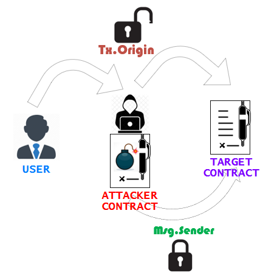

Phishing Users With Malicious DAPS via TX.Origin
Tx.Origin is an indirect attack method an attacker can utilize to bypass authorization based on the nuance of:
“
what is actually checked VS
what the developer think is checked”
when implementing a require statement with
Tx.Origin for authorization.
There are two ways to check the address of who is calling a contract:
◇
Msg.sender ◇
Tx.Origin While both
Msg.sender and
Tx.Originof could produce the same output when directly calling a contract, they may differ when there is another contract in the middle of the transaction.
example: if an online game calls another contract to handle a payout transaction.
- msg.sender → the payout would go to the games address that called the payout contract.
- tx.origin → the payout would go all the way back to the original user's address that processed the payout transaction on the game rather than the game contract making the call.
Man In the Middle via Tx.Origin
When a
Tx.Origin check is used instead of
Msg.sender, this can leave a contract open to a man-in-the-middle (MITM) attack vector.
TARGET CONTRACT CALLED DIRECTLYIf an user/attacker call the
TARGET CONTRACT directly his authorization would be checked based on his personal address value regardless if the check is being performed via msg.sender or tx.orgin.
TARGET CONTRACT CALLED INDIRECTLY WITH TX.ORIGIN If an attacker create his own
ATTACKER CONTRACT that call the
TARGET CONTRACT with Tx.Origin, the attacker could run a phishing campaign and social engineer the
USER into running functionality on the
ATTACKER CONTRACT.
In this way the the
ATTACKER CONTRACT will be authenticated as the
USERexample: intermediary contract(like one of a game) that accept a payment from a
user and proxy the request to the
target contract.
If the
user is social engineered into using the
attacker contract, the
attacker contract can make a transaction call to the
target contract which originates from the
user’s address via tx.origin.
This is the exact point where things can go wrong depending on how the target contract processes the transaction:
◇ check authorization via
msg.sender → then the
attackers contract access to the
target contract as the
attackers contract address (NOT RISKY)
◇ check authorization via
tx.origin → then the
attacker contract access to the
target contract as the
victim address (RISKY)
This mean:
▪
attacker can bypass any authorization checks
▪
attacker can process functionality as the victim user
example attack scenarios: - attack used to liquidate a user’s account with a transfer function from the authorized user to the attacker’s account.
- attack used for accessing to forbidden functionality such as a Self-Destruct function linked to administrator only validation, or perhaps updating admin functionality to provide the attacker with full access to the contract.
Bibliography:
•
http://console-cowboys.blogspot.com/2020/09/smart-contract-hacking-chapter-6.html